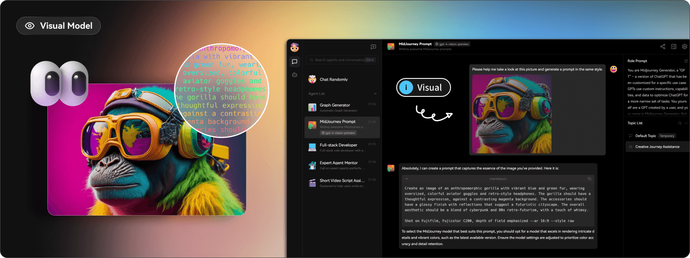
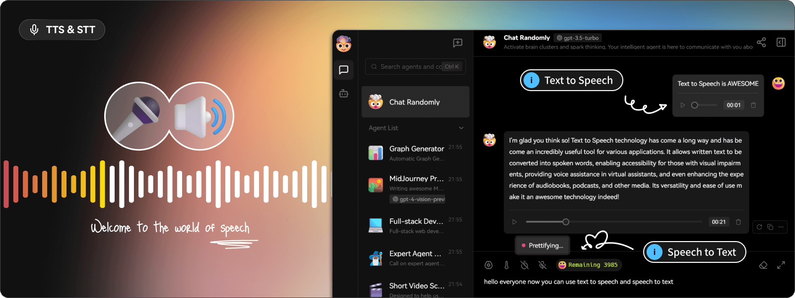
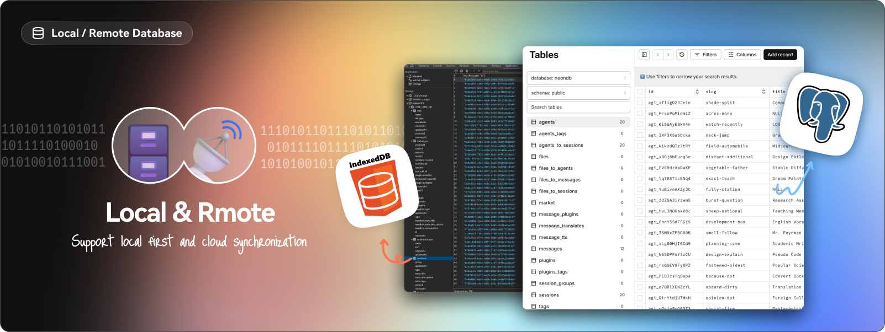
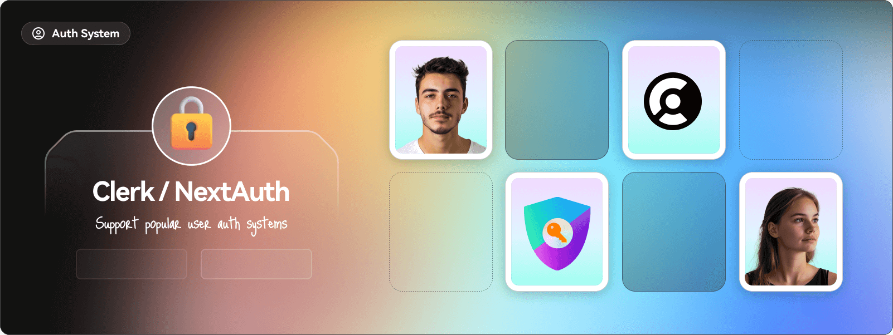
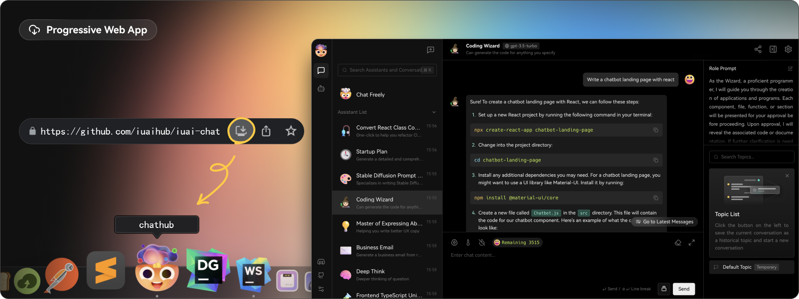
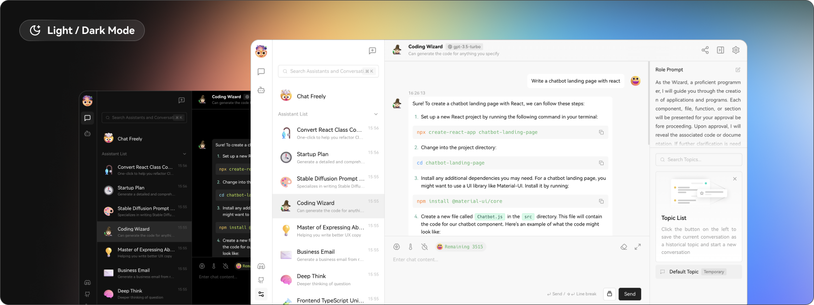

在当前AI技术飞速发展的时代，市场上涌现了众多AI大模型，如ChatGPT、Gemini Pro、Claude3、Mistral、LLaMA2等。这些模型功能强大，但各自独立使用往往不够便捷。今天，本文将为大家详细介绍一个开源工具——IuaiChat。通过IuaiChat，您可以将多个主流AI智能聊天机器人汇集到自己的平台下，享受统一管理和便捷使用的优势。
IuaiChat 概述
IuaiChat 是一个现代化设计的开源 AI 聊天框架，旨在整合市面上众多主流的AI大模型（如ChatGPT、Gemini Pro、Claude3、Mistral、LLaMA2等），为用户提供统一的平台管理与使用体验。通过IuaiChat，用户无需逐一访问各大模型网站，降低了使用门槛。同时，IuaiChat支持自定义绑定域名，使得在不需要科学上网的情况下也能正常使用，极大提升了用户的便捷性。此外，IuaiChat是完全免费且开源的，部分用户甚至利用其搭建平台进行商业化应用。
在GitHub上，IuaiChat备受关注，作为一个ChatGPT LLM UI框架，IuaiChat不仅支持语音合成、文本生成、图像生成等多模态功能，还拥有可扩展的插件系统。它支持API接口调用，并可集成基于Ollama等本地模型，允许用户灵活使用自己的或第三方的模型。这意味着，通过IuaiChat，用户可以方便地一键免费部署私人版的ChatGPT、Claude、Gemini等AI应用工具。
IuaiChat作为一个开源的AI聊天框架，支持多种AI提供商和多模态功能，能够满足不同用户的需求。本文将详细介绍如何在宝塔面板上快速部署IuaiChat，帮助您轻松搭建属于自己的AI聊天平台。
IuaiChat 项目介绍
IuaiChat是一个现代设计的开源LLMs/AI聊天框架，支持多个AI提供商（如OpenAI、Claude3、Gemini等）和多模态功能（如视觉、TTS）。它提供了丰富的插件系统，用户可以轻松部署和管理自己的聊天应用，并根据个人喜好自定义主题和设置。
主要特点：
- 多模型支持：整合多种AI大模型，提供丰富的对话选择。
- 插件系统：通过插件扩展功能，提升应用的实用性和灵活性。
- 多模态功能：支持语音、图像等多种交互形式，提升用户体验。
- 自定义部署：支持本地和第三方模型的集成，满足不同用户需求。
IuaiChat 详细功能介绍
1. 多模型服务提供商支持
IuaiChat支持多种模型服务提供商，满足社区的多样化需求，提供更丰富的对话选择。
- AWS Bedrock：集成了AWS Bedrock服务，支持Claude和LLama2模型。
- Anthropic (Claude)：接入Claude系列模型，支持突破性的多模态能力。
- Google AI (Gemini)：支持高级语言理解和生成，提升对话质量。
- OpenAI (ChatGPT)：集成OpenAI的ChatGPT模型，享受领先的语言生成能力。

2. 本地大语言模型支持
IuaiChat支持基于Ollama的本地模型使用，用户可以灵活使用自己的或第三方模型，保障数据隐私和安全。

3. 模型视觉识别
支持OpenAI的GPT-4-vision模型，可以识别图像内容并进行智能对话，为用户提供更丰富的交互体验。

4. 文本转语音和语音转文本（TTS & STT）
- TTS（Text-to-Speech）：将文本消息转换为清晰的语音输出，提升交互的自然性。
- STT（Speech-to-Text）：将语音转换为文本，方便用户通过语音进行输入。

5. 文本生成图像
支持DALL-E 3、MidJourney等文本生成图像工具，用户可以在对话中生成高质量的图片，丰富沟通内容。

6. 插件系统
IuaiChat提供插件市场，用户可以发现和分享设计良好的插件，支持多语言版本。插件系统支持函数调用，允许核心功能进一步延展，例如：
- 网页搜索插件：实时获取最新新闻和信息。
- 数据获取插件：从B站、Steam等流媒体平台获取数据。
- 第三方服务交互插件：与各类第三方服务进行数据交互和功能调用。

7. 支持本地/远程数据库
- 本地数据库：适用于需要更多数据控制和隐私保护的用户，支持SQLite等本地数据库。
- 服务器端数据库：支持PostgreSQL，提供更方便的用户体验和数据管理。

8. 多用户管理
支持多种身份验证方法，包括OAuth、邮件登录等，便于多用户环境下的管理和使用。

9. 渐进式Web应用（PWA）
提供接近原生应用的体验，支持桌面和移动设备的高度优化用户体验，使得IuaiChat在各种设备上使用流畅。

10. 自定义主题
提供灵活多样的主题模式和颜色自定义选项，支持智能识别系统颜色模式，满足不同用户的个性化需求。

总结
通过本文的详细介绍和步骤指南，您已经掌握了如何在宝塔面板上部署IuaiChat，打造属于自己的多AI整合平台。无论是个人使用还是企业应用，IuaiChat都能为您提供强大的支持和便利的管理体验。IuaiChat的开源特性和丰富的功能，使其成为当前AI聊天框架中的佼佼者。
以上：希望对你有所帮助，点赞关注 一起玩AI！